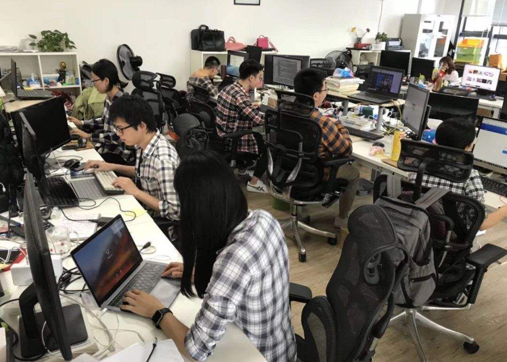

原文连接:https://www.cnblogs.com/java-friend/p/11926053.html
在知乎上看到一个问题，如何确定自己是否适合做程序员？
好多答主都说需要智商高，
对计算机有兴趣爱好，
抽象能力要好。
……
啊呸，也不知道这些刚下飞机的答主是不是程序员。
我在 it 行业工作了三年，换了几家公司，所以就以我三年程序员的经历，来说说做一名程序员需要什么。
1、喜欢运动，保持良好的身体去扛住 996

2、极强的心理素质，看着每天洗脸盆里的头发丝毫不慌
看，老师从来不慌
3、强大的逻辑思维能力，便于和产品撕 X
4、独到的审美，可以瞬间在优衣库中挑出最靓的格子衫

5、会修电脑、破解 QQ 密码，不解释！
6、忍受孤独，实力单身
对不起，我的世界只有代码
7、家里有矿，过了 30 岁就要准备退休的事了

如果你同时符合这七种要求，那你明天就可以来上班了。
咳咳，好了，玩归玩，闹归闹，别拿职业开玩笑，下面认真说一说做一名程序员都需要什么。
1、自学能力 + 持续学习
自学能力对于程序员来说是非常重要了，IT 需要的知识技术太多了，你工作用到的知识，大部分学校都没有专门的课讲授，更别指望工作后有谁专门教你，有的最多是技术分享，做一些介绍，想要掌握还是需要自己私下学习。
当然了，大部分技术工作都需要自学能力，但是程序员行业尤其重要。
重要到什么程度呢？
这么说吧，我刚工作那会用的框架，三年后基本都没人用了，如果想继续混下去，就要跟着趋势学，否则就要被淘汰。
在工作中还会遇到非常多的问题，如果不是靠自己学习和钻研，去解决大部分问题，那剩下的路就很难走了。
同事也都有工作，没有人会一个一个问题给你解决，都是自己查方案，自己学习，自己解决。
所以，没有持续的自学能力，千万别做程序员。
2、习惯总结积累 + 输出
上面说了，程序员在工作中会遇到很多问题，所以你的经验大部分来自于踩坑。
如何判断一个程序员能力高低？
可以从他对问题的看法，解决思路，还有对一个方案可能出现的问题这些方面判断。
那你问这又和总结积累有啥关系呢？
有关系，程序员能力高低不是天生的，也不是职业时间越长能力越高。主要还是在工作中的总结积累，碰到一个问题，总结下来，加深自己印象，下次遇到同样的问题可以快速想起解决方案。
光靠大脑记忆是有限的，并且没有记录，印象会更浅，每天都有问题，很容易忘了以前遇到同样的问题是怎么做的。
如果你能把积累下来的问题，总结成文章，用清晰的逻辑表达出来，再给别人讲明白，那你的能力就会有很快的提高了。
一般来说，程序员称自己” 码农 “都是自嘲，但是如果你不会总结积累，那可能就是真的码农了。
3、专注力好
写代码和写文章一样，也是需要状态的，状态好，你就会思如泉涌，状态差，轻则写出来的代码质量很差，重则 bug 成山。
当你调试问题或者捋思路的时候，可能需要花 20 分钟进入状态，此时如果你被一些因素打断了，那你的思路可能就断了，需要再花一些时间重新捋逻辑。
当你反复这个过程，等一天结束的时候你就会发现今天什么也没干。不过专注力是可以训练的，而且上班程序员一般也不会有很多外界干扰，自己注意好就可以。
4、英语四级
也不一定非要英语四级，但是至少要知道一些基本的专业词汇，写代码的时候起名也能用上含义差不多的单词，如果你工作之后还用拼音做变量，那可能就要被同事鄙视到天上去了。
四级过了，起码能稍稍看懂英文文档，工作之后好多地方还是需要看英文文档的，例如 github 上面的一些文档，stackoverflow 上提问的问题，谷歌官方文档等等。
总是指着翻译软件或者在线翻译，效率很低的。
5、深入浅出的能力
你需要把专业的知识用简单的语言解释给非专业的人。
你的框架可能很复杂，技术很专业，但是程序员不光和电脑打交道，还要和产品、设计、运营同学等对技术了解不多的人打交道，在对需求的时候，就需要你用他们能理解的话，解释你想表达的技术方案。
还有在公司内部做技术分享的时候，虽然大部分都是做技术的同学，但是技术栈可能不一样，如果你一直基于自己的认知讲，那对完全不了解的人可能是折磨。
我参加过多个技术分享，绝大部分的人都是基于所有人的技术栈都一样讲的，搞得我大部分时间都在刷手机。
好了，说了五点，也没有提要有兴趣爱好，为什么？
因为这不是必要条件，并且可能百分之八十的程序员都不是基于兴趣爱好才选的这个行业，在我身边看到的真正对技术感兴趣，是自己的兴趣爱好所在的，真的是少之又少。
但这并不影响我们热爱这个行业，也正所谓，干一行爱一行。
最后说明一下，上面的段子基本都是自黑，程序员职业其实也是正常的职业，就和每个职业都一样，都有外界的一些误解。我身边的同事基本都没有格子衫，大部分也都有另一半，
为啥呢？
还不是程序员是一群优秀的人嘛！
“不积跬步，无以至千里”，希望未来的你能：有梦为马 随处可栖！加油，少年！
关注公众号:「Java 知己」，每天更新Java知识哦，期待你的到来！
- 发送「Group」，与 10 万程序员一起进步。
- 发送「面试」，领取BATJ面试资料、面试视频攻略。
- 发送「玩转算法」，领取《玩转算法》系列视频教程。
- 千万不要发送「1024」...